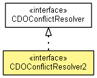

org.eclipse.emf.cdo.transaction
Interface CDOConflictResolver2
- All Superinterfaces:
- CDOConflictResolver
- All Known Implementing Classes:
- AbstractObjectConflictResolver, AbstractObjectConflictResolver.MergeLocalChangesPerFeature, AbstractObjectConflictResolver.TakeRemoteChangesThenApplyLocalChanges, AbstractObjectConflictResolver.ThreeWayMerge
- public interface CDOConflictResolver2
- extends CDOConflictResolver

A strategy used to customize the default conflict resolution behaviour of transactions.
- Since:
- 4.0
resolveConflicts
void resolveConflicts(Map<CDOObject,Pair<CDORevision,CDORevisionDelta>> conflicts,
List<CDORevisionDelta> allRemoteDeltas)
- Resolves conflicts after remote invalidations arrived for objects that are locally dirty or detached.
Depending on the decisions taken to resolve the conflict, it may be necessary to adjust the notifications that will
be sent to the adapters in the current transaction. This can be achieved by adjusting the CDORevisionDelta
in deltas.
- Parameters:
conflicts - A map that contains the local objects with conflicts as the keys. Each value in this map is a pair that optionally contains the old local revision (ancestor) as element1 and the remote
delta as element2. Any of the pair elements can be null if it is not possible to determine it
locally (depends on local revision caching and server behaviour regarding transmission of deltas instead
of invalidations).
Copyright (c) 2011, 2012 Eike Stepper (Berlin, Germany) and others.